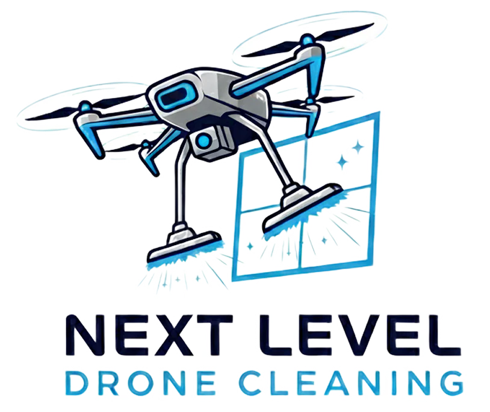
01 · symbolsset aside
Literal pairings — a drone with a window, a solar-panel crest. Promising parts, not yet a brand.
a brand built from scratch
Next Level Drone Cleaning washes Belgium's roofs, facades, windows, and solar panels by drone — 4× faster than scaffolding crews, with none of the fall risk.
Sebastien had the business; it needed a face. From a chance meeting in Madrid, we built one from scratch: nine logo iterations, three colorways, and a rollout across web, socials, and apparel.
9 iterations → 1 mark on 5 surfaces
nextleveldronecleaning.be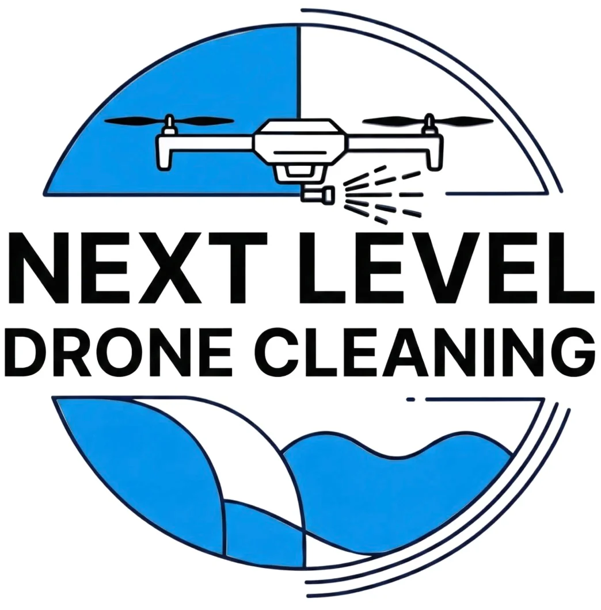
a night out in Madrid
Summer 2025: a Foreign Language Acquisition Grant from UChicago sent me to Madrid to study Spanish. On a night out I met Sebastien — an up-and-coming entrepreneur running a Belgian drone-cleaning business.
A designer looking for new clients; a founder looking for a fresh identity. The pairing was perfect, so we quickly got to work.
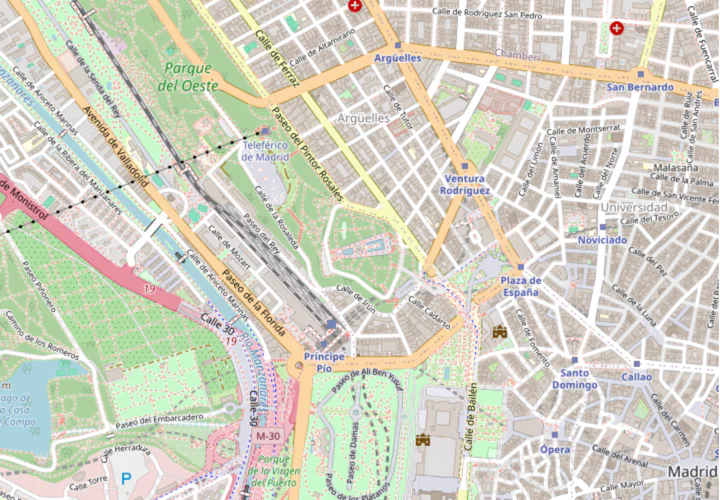
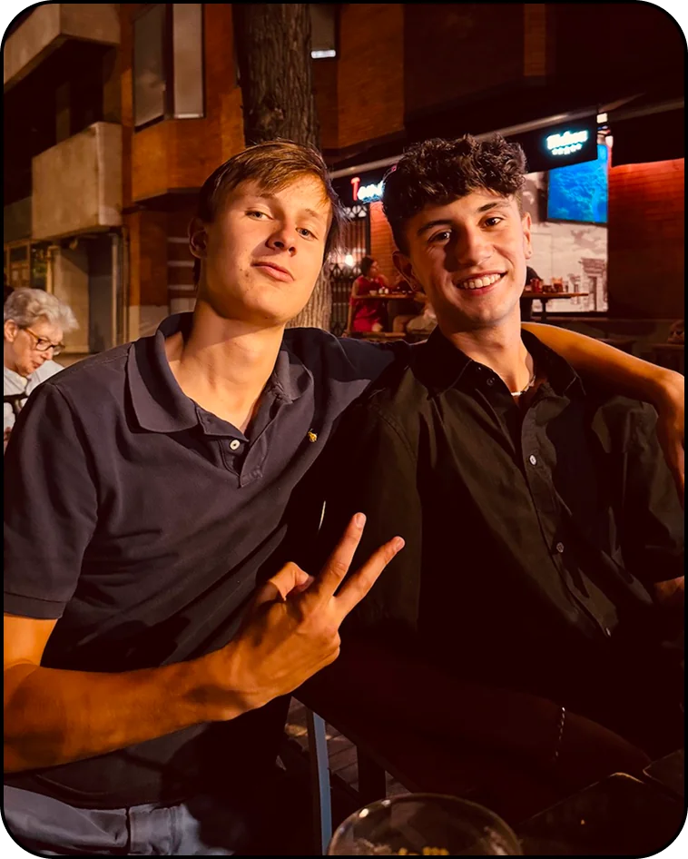
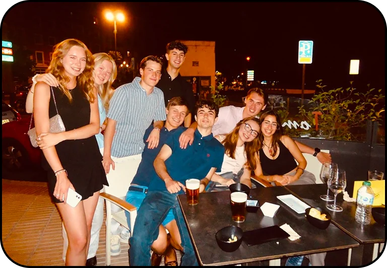
six questions before a single sketch
the six essential questions — Michael Johnson, Branding: In Five and a Half Steps
“We are here to revolutionize the way we clean buildings. In Belgium, cleaning high-rises requires large teams and expensive scaffolding. Drone cleaning reduces the danger and cuts the unnecessary cost — done well, we can disrupt the status quo.”
“We provide professional drone cleaning for roofs, facades, windows, and solar panels. Advanced aerial technology and pure osmosis water eliminate the need for scaffolding — 4× faster, safer, eco-friendly, across Belgium.”
“Efficiency: our drones are 4× faster and 20% cheaper at €5 per m². We eliminate fall risks by 99% while reaching heights without heavy machinery — a safer, more sustainable clean.”
“Residential and commercial clients across Belgium — homeowners, businesses, and facility managers who need to clean high or difficult-to-reach places.”
“Safety and innovation above all. Replacing dangerous scaffolding with drones protects our team and your property — sustainable, high-quality cleaning that respects the environment.”
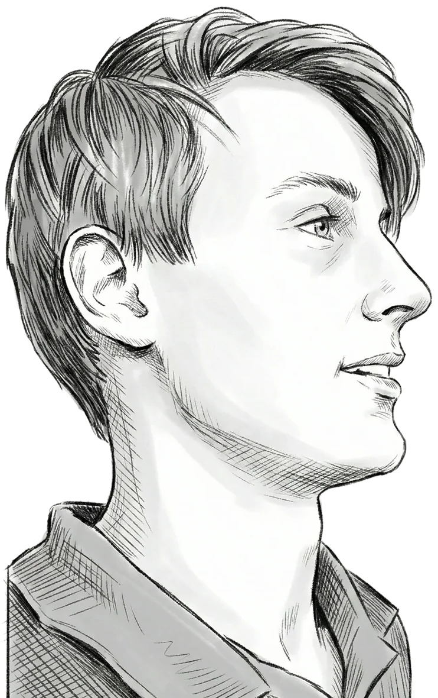
click the questions, the card, or use ← →
which raised the question
How might one mark feel approachable and professional at once?
both worlds in one badge
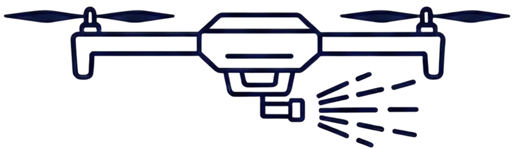
Professional through restraint — a minimal drone on a clean serif badge. Approachable through color — a vibrant blue that keeps it friendly.
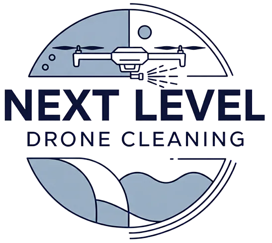
grey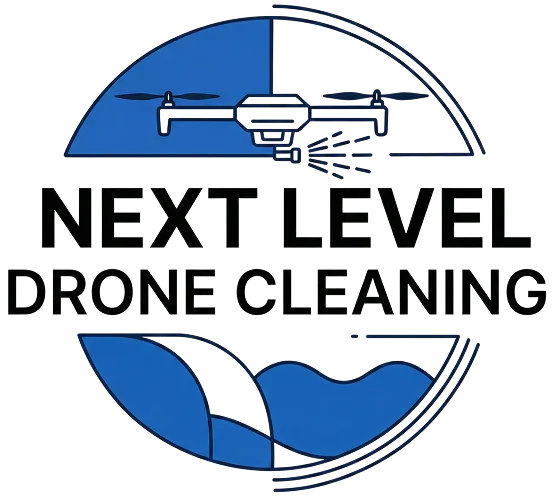
dark blue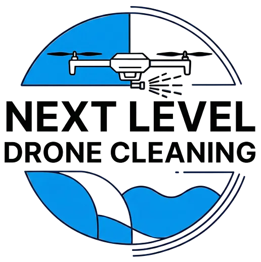
light blue · #B8EDF8nine ideas, four directions

Literal pairings — a drone with a window, a solar-panel crest. Promising parts, not yet a brand.
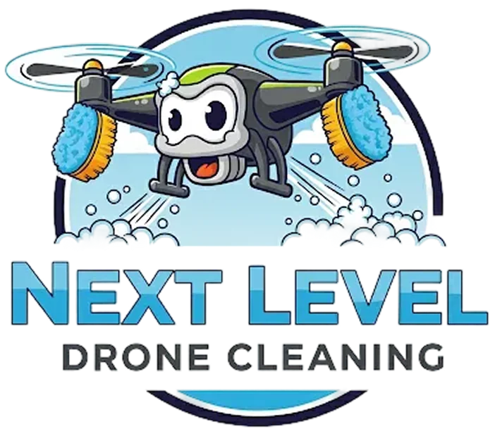
A personified drone brought the fun — approachable, but too playful for commercial clients.
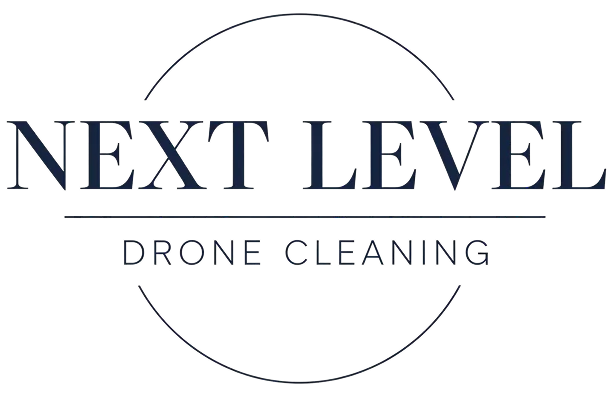
Refined, serif, classy — professional, but the warmth went missing.
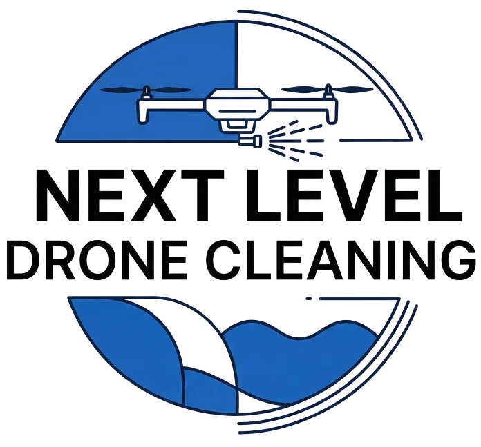
A character's warmth on a wordmark's spine, pared down until it scaled — the badge you just saw.
one mark, everywhere
the brand, pinned up
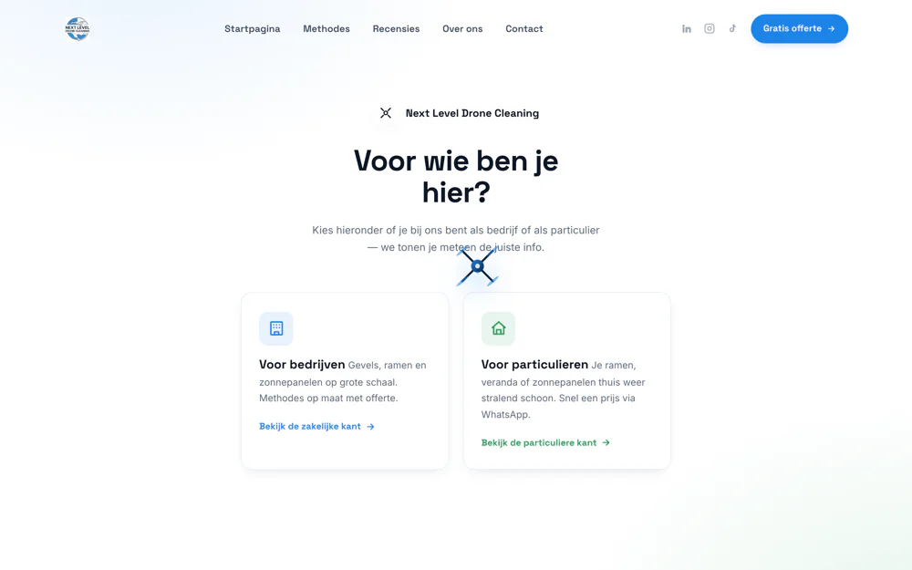
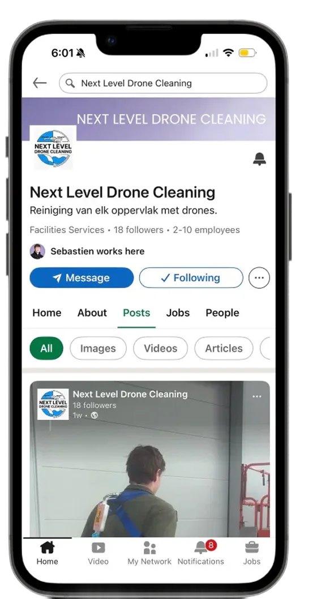
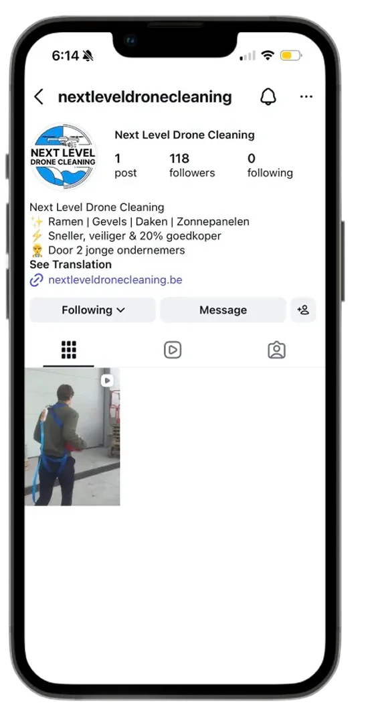
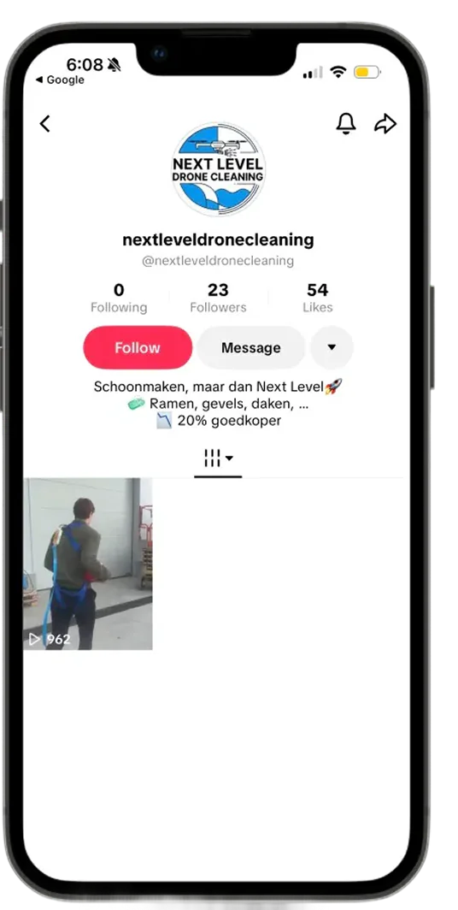
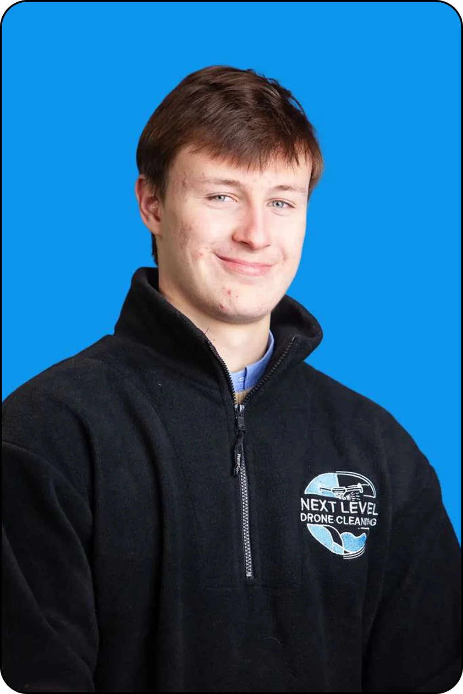
hover a piece to straighten it · click to look closer
what the mark taught me
9 → 1
logo iterations explored before the final badge
6
essential questions asked before a single sketch
5
surfaces carrying the brand — web, socials, and apparel
what I learned
The logo serves the story — interviewing Sebastien first made every sketch mean something; the visuals came second.
Present in batches, with stories — naming each direction's character gave Sebastien the words for what he wanted.
Synthesize, don't select — the final badge merged the playful and the professional instead of picking a side.
web the website 1 / 5